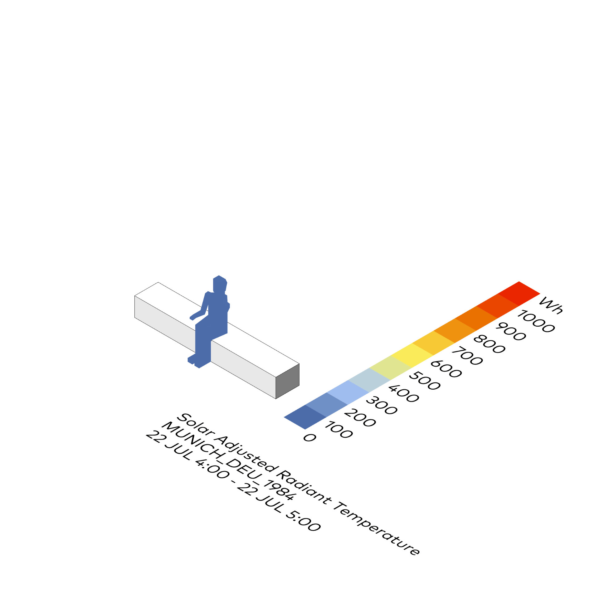
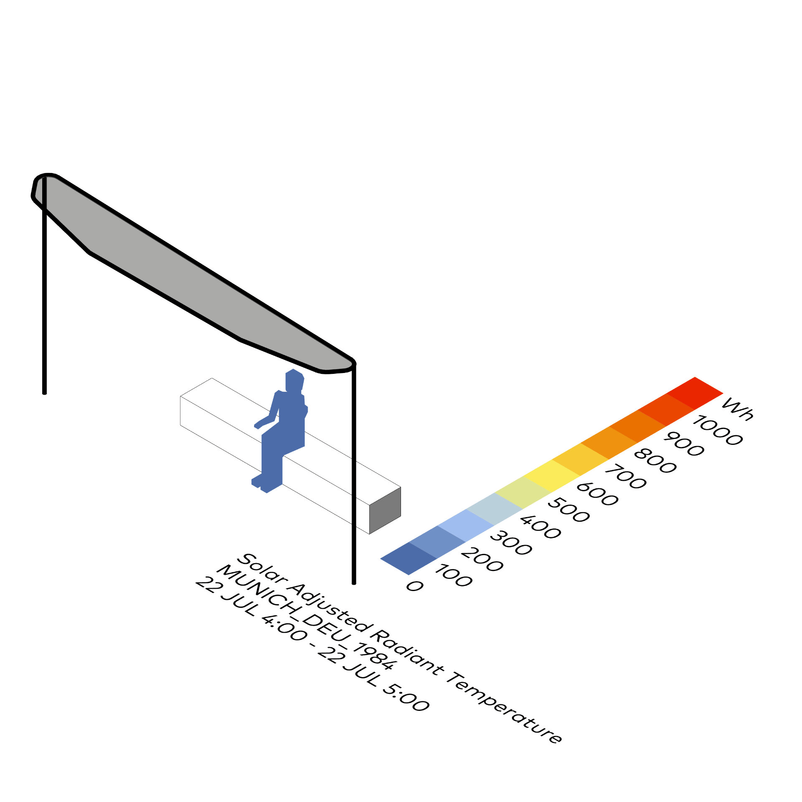
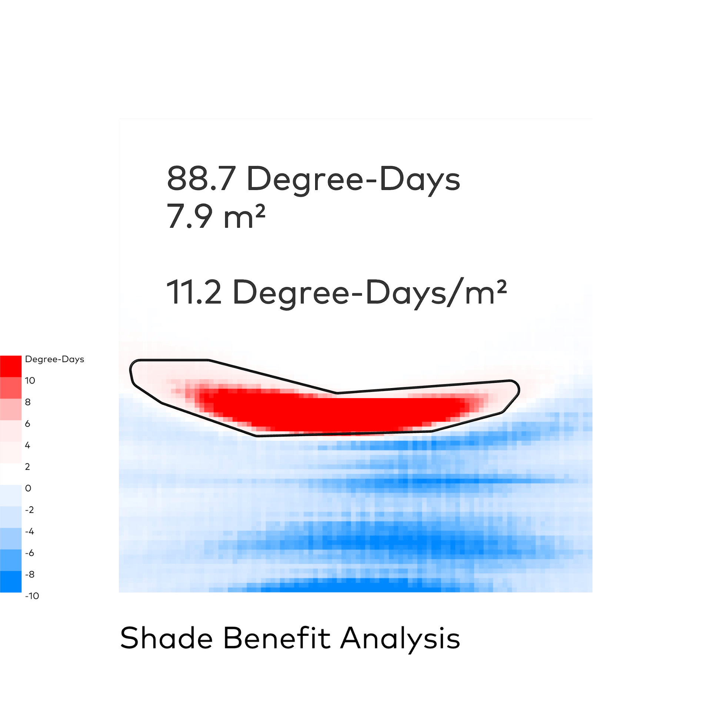

Thermische Behaglichkeit + Verschattungsnutzen
Ladybug
⬤ Ladybug modelliert Strahlungsasymmetrie, Konvektion und MRT in Außenräumen – kartiert Verschattungsnutzen präzise. Zeigt MRT-Reduktion bei Sommerhitze vs. Solargewinne im Winter. Farbcodierte saisonale Visualisierungen. Basis für Außenraum-Design (Parks, Plätze) und Wärmeinsel-Minderung – klimaintelligente städtebauliche Strategien.
⬤ Ladybug models radiation asymmetry, convection, and MRI in outdoor spaces – precisely mapping shading benefits. Shows MRI reduction during summer heat vs. solar gains in winter. Color-coded seasonal visualizations. Basis for outdoor space design (parks, squares) and heat island reduction – climate-smart urban planning strategies.